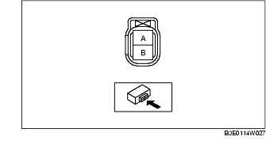
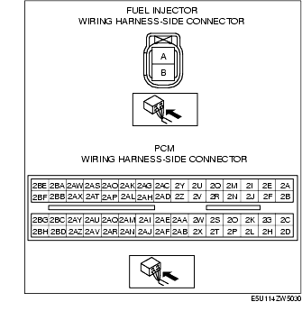
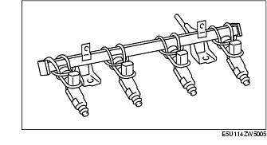
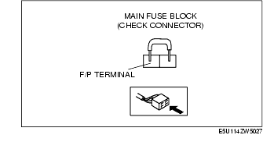
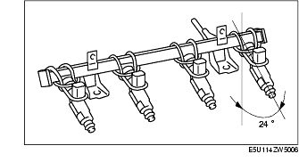
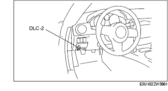
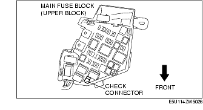
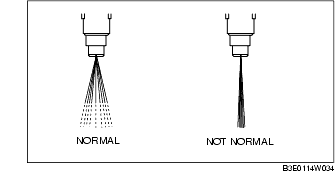

Workshop Manual ➭ ENGINE ➭ FUEL SYSTEM[L8, LF] ➭ FUEL INJECTOR INSPECTION [L8, LF]
FUEL INJECTOR INSPECTION [L8, LF]
id0114a3800700
{: #wp1059779}
*Note*{: #wp1064425}
• Perform the following inspection only when directed.
Resistance Inspection
-
Remove the battery cover.
-
Disconnect the negative battery cable. (See BATTERY REMOVAL/INSTALLATION [L8, LF].)
-
Disconnect the fuel injector connector.
-
Inspect the resistance between fuel injector terminals A and B using a tester.{: #wp1059845}

• If within the specification, perform the "Circuit Open/Short Inspection". {: #wp1059872}• If not within the specification, replace the fuel injector. (See FUEL INJECTOR REMOVAL/INSTALLATION [L8, LF].)
Fuel injector resistance11.4-12.6 ohms [20 °C {68 °F}]
Circuit Open/Short Inspection
-
Disconnect the PCM connector. (See PCM REMOVAL/INSTALLATION [L8, LF].)
-
Inspect the following wiring harnesses for open or short circuit (continuity check).{: #wp1059976}

Open circuit
• If there is no continuity, there is an open circuit. Repair or replace the wiring harness.
- Fuel injector No.1 terminal B and PCM terminal 2BB {: #wp1060023}- Fuel injector No.2 terminal B and PCM terminal 2BC {: #wp1060037}- Fuel injector No.3 terminal B and PCM terminal 2BD {: #wp1060047}- Fuel injector No.4 terminal B and PCM terminal 2AZ {: #wp1060057}- Fuel injector No.1 terminal A and main relay {: #wp1060067}- Fuel injector No.2 terminal A and main relay {: #wp1060077}- Fuel injector No.3 terminal A and main relay {: #wp1060087}- Fuel injector No.4 terminal A and main relay
Short circuit
• If there is continuity, there is a short circuit. Repair or replace the wiring harness.
- Fuel injector No.1 terminal B and body ground {: #wp1060127}- Fuel injector No.1 terminal B and power supply {: #wp1060141}- Fuel injector No.2 terminal B and body ground {: #wp1060151}- Fuel injector No.2 terminal B and power supply {: #wp1060161}- Fuel injector No.3 terminal B and body ground {: #wp1060171}- Fuel injector No.3 terminal B and power supply {: #wp1060181}- Fuel injector No.4 terminal B and body ground {: #wp1060191}- Fuel injector No.4 terminal B and power supply {: #wp1060201}- Fuel injector No.1 terminal A and body ground {: #wp1060211}- Fuel injector No.2 terminal A and body ground {: #wp1060221}- Fuel injector No.3 terminal A and body ground {: #wp1060231}- Fuel injector No.4 terminal A and body ground
Leakage Inspection
Warning
• Fuel line spills and leakage from the pressurized fuel system are dangerous. Fuel can ignite and cause serious injury or death and damage. To prevent this, complete the following inspection with the engine stopped.
-
Follow "BEFORE SERVICE PRECAUTION" before performing any work operations to prevent fuel from spilling from the fuel system. (See BEFORE SERVICE PRECAUTION [L8, LF].)
-
Remove the battery cover.
-
Disconnect the negative battery cable. (See BATTERY REMOVAL/INSTALLATION [L8, LF].)
-
Remove the fuel injector and fuel distributor as a single unit. (See FUEL INJECTOR REMOVAL/INSTALLATION [L8, LF].)
-
Fix the fuel injector to the fuel distributor with a wire or the equivalent.{: #wp1060347}

-
Connect the fuel hose.
-
Start the fuel pump using the following procedure:
Using M-MDS
- Connect the negative battery cable.
{: #wp1060405}2. Connect the M-MDS to the DLC-2.

{: #wp1060415}3. Start the fuel pump using the "FP" simulation function.
Not using M-MDS
- Short the check connector terminal F/P to ground using a jumper wire.


- Turn the ignition switch to the ON position to operate the fuel pump.
*Note*{: #wp1060535}
• Prepare a container to collect the gasoline.
- Tilt the fuel injector at an angle of 24° to inspect for leakage.{: #wp1060553}

• If not within the specification, replace the fuel injector. (SeeFUEL INJECTOR REMOVAL/INSTALLATION [L8, LF].
Fuel injector leakage amountLess than 1 drop/2 min
- Stop the fuel pump using the following procedure:
Using M-MDS
- Stop the fuel pump using the "FP" simulation function.
Not using M-MDS
-
Turn the ignition switch to off to stop the fuel pump.
-
Remove the battery cover.
-
Disconnect the negative battery cable. (See BATTERY REMOVAL/INSTALLATION [L8, LF].)
-
Remove the wire or equivalent securing the fuel injector.
-
Install the fuel injector. (See FUEL INJECTOR REMOVAL/INSTALLATION [L8, LF].)
-
Complete the "AFTER SERVICE PRECAUTION". (See AFTER SERVICE PRECAUTION [L8, LF].)
Injection Volume Inspection
Warning
• Fuel line spills and leakage from the pressurized fuel system are dangerous. Fuel can ignite and cause serious injury or death and damage. To prevent this, complete the following inspection with the engine stopped.
-
Follow "BEFORE SERVICE PRECAUTION" before performing any work operations to prevent fuel from spilling from the fuel system. (See BEFORE SERVICE PRECAUTION [L8, LF].)
-
Remove the battery cover.
-
Disconnect the negative battery cable. (See BATTERY REMOVAL/INSTALLATION [L8, LF].)
-
Remove the fuel injector. (See FUEL INJECTOR REMOVAL/INSTALLATION [L8, LF].).
-
Connect the fuel injector to the fuel injector tester.
-
Start the fuel pump using the following procedure:
Using M-MDS
- Connect the negative battery cable.
{: #wp1060899}2. Connect the M-MDS to the DLC-2.

{: #wp1060909}3. Start the fuel pump using the "FP" simulation function.
Not using M-MDS
- Short the check connector terminal F/P to ground using a jumper wire.


-
Turn the ignition switch to the ON position to operate the fuel pump.
-
Measure the injection volume of each fuel injector.
• If not within the specification, replace the fuel injector. (See FUEL INJECTOR REMOVAL/INSTALLATION [L8, LF].)
Fuel injection volume204-216 ml {204-216 cc, 12.5-13.1 cu in}/min
-
Turn the ignition switch to off to stop the fuel pump.
-
Install the fuel injector. (See FUEL INJECTOR REMOVAL/INSTALLATION [L8, LF].)
-
Complete the "AFTER SERVICE PRECAUTION". (See AFTER SERVICE PRECAUTION [L8, LF].)
Atomization Inspection
- Inspect the atomization status.{: #wp1061146}

• If not normal, replace the fuel injector. (See FUEL INJECTOR REMOVAL/INSTALLATION [L8, LF].)